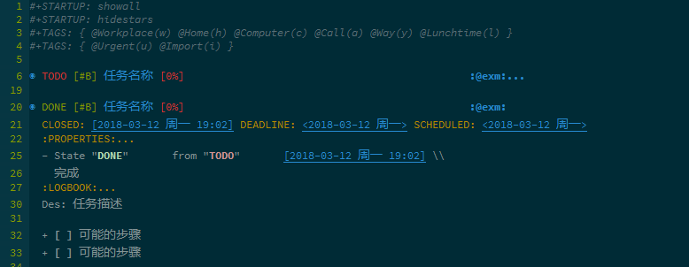
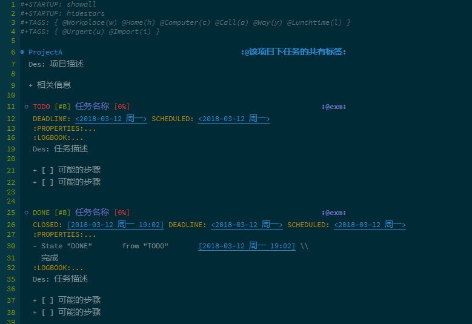

Emacs Org 搭建 GTD 系统
目录
1 前言
使用 Emacs Org 来搭建 GTD 系统是很安逸的， 这里简单分享一下自己的 GTD 系统的结构。
强烈推荐一篇博客： Emacs月月积累（终结篇）：熟练使用org-mode管理日常事务.
写的真的很棒， 很多细节内容在里面都有提及。
2 文件结构
/---log/ | |---2017/ | |---dec.org | |---2017.org |---inbox.org |---task.org |---project.org |---routine.org |---plan.org
2.1 log
日志文件夹， 根据年份建立子文件夹， 如： 2017, 2018.
子文件夹内， 根据月份建立子文件， 如： dec.org.
| 月份 | 一 | 二 | 三 | 四 | 五 | 六 | 七 | 八 | 九 | 十 | 十一 | 十二 |
|---|---|---|---|---|---|---|---|---|---|---|---|---|
| 简写 | Jan. |
Feb. |
Mar. |
Apr. |
May. |
Jun. |
Jul. |
Aug. |
Sec. |
Oct. |
Nov. |
Dec. |
日志文件： 每周记录一次， 跨月时， 哪一周的周日在那个月算那个月的。
内容结构：
2.2 inbox.org
收集箱， 收集一些想法和需要完成的任务， 每周清理一次。
Update 2018-04-30: 现在感觉收集箱的作用不是很明显了， 很多事情都是直接
丢进 task.
2.3 task.org
列举相对独立的任务， 每周清理一次， 将完成状态的任务移入日志文件。
内容结构：

2.4 project.org
列举的项目任务， 每个项目由多个子任务组成， 每周清理一次， 将完成状态的任务移入日志文件
内容结构：

2.5 routine.org
列举日常任务， 这些任务可能需要较长时间的循环完成， 每周清理一次， 将 完成信息 移入日志文件
内容结构：
2.6 plan.org
计划也是规范， 改动频率较低， 也没有固定的结构。
3 Org 使用
对于 Org 的使用， 网上有很多详细的教程了， 这里简单列举一些常用的快捷键：
- org-mode:
C-c C-s设置任务开始时间C-c C-d设置任务截止时间C-c C-t改变任务状态S-Up/Down设置任务优先级[#A],[#B],[#C]C-c C-x C-i开始任务计时C-c C-x C-o终止任务计时C-c [将当前文件加入Org-AgendaC-c ]将当前文件从Org-Agenda移除C-c .
- org-agenda:
C-c a打开Org-Agenda视图选择页面C-c a a打开Org-Agenda视图， 任务根据日期列出C-v在Org-Agenda视图中， 选择其他显示方式I在Org-Agenda的任务条目上， 开始计时O在Org-Agenda的任务条目上， 终止计时t在Org-Agenda的任务条目上， 修改任务状态